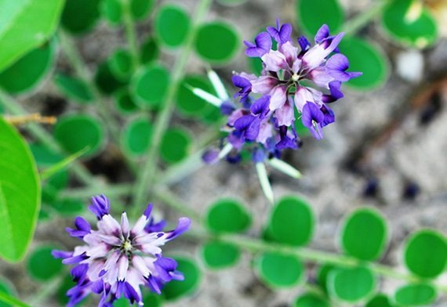

สมุนไพรไทย 22 ชนิดเสี่ยงสูญพันธุ์ ประกาศคุ้มครองและควบคุม 7 ชนิด
กระทรวงสาธารณสุขได้ประกาศรายชื่อ สมุนไพรไทย จำนวน 22 ชนิด อยู่ใน “ภาวะเสี่ยงต่อการสูญพันธุ์”
1.ถั่วดินโคก
สรรพคุณ : ช่วยลดไข้ในเด็ก ใช้ต้มกับน้ำดื่มเป็นยาบำรุงน้ำนมของสตรี และใบนำมาฝนทาเป็นยาแก้ฝี
1.ถั่วดินโคก
สรรพคุณ : ช่วยลดไข้ในเด็ก ใช้ต้มกับน้ำดื่มเป็นยาบำรุงน้ำนมของสตรี และใบนำมาฝนทาเป็นยาแก้ฝี